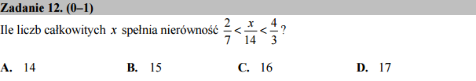

O brutalnej metodzie i pętli for przyrządzonej na dwa sposoby¶

{kind=link}
Ile liczb całkowitych spełnia nierówność \(\frac{2}{7}<\frac{x}{14}<\frac{4}{3}\)?
Zadanie może się wydawać zbyt łatwym by traktować je komputerem, ale
możemy je wykorzystać by poćwiczyć sobie pętlę for.
I tak możemy sprawdzić („dla pewności”) wszystkie liczby z przedziału \(x\in(-1000,1000)\) wykorzystując system Sage, a właściwie sam język Python. Takie podejście czasem jest zwane metodą brute force - czyli brutalną zob. link . Zmuszamy bowiem komputer do brutalnie dużego wysiłku - przynajmniej w stosunku to złożoności postawionego problemu.
Uczyńmy to więc:
Oczywiście każdy matematyk zaprotestuje, nie mamy pewności czy nie ma liczb całkowytych poza przedziałem, które spełniają te nierówności. W tym przypadku mie ma problemu by rozwiązać w dziedzinie liczb rzeczywistych:
Ponieważ wykonaliśmy sprawdzenie każdej liczby z osobna, można również oszacować zakres. Skoro \(\frac{x}{14}\) jest większe od \(\frac{2}{7}\) to na pewno będzie większe od \(0\). Z drugiej strony jest mniejsze od \(\frac{4}{3}\) to będzie mniejsze też od np. \(2\). Czyli wychodzi ze \(x\) będzie większe od \(0\) i mniejsze od \(2 \times 14 = 28\). Okazało się, że poprzedni przedział nie zawęził poszukiwania!
Ja to działa? - „list comprehension” - produktowanie list
Wyrażenie [x for x in range(-1000,1000) if 2/7<x/14<4/3]
zawiera konstrukcję która wykona następującę polecenie: podaj mi
wszystkie x od -1000 do 999, które spełniają dany warunek. Jest to
de facto pętla for, tylko tak sprytnie zapisana, że od razu
generuje listę. Przypomina to nieco zapis matematyczny:
Możemy również wykonać to samo zadanie bardziej klasycznie wyglądającą
pętlą for: